批量导入功能 · 操作手册
面向不熟悉业务的同事：从「为什么要做批量导入」讲起，到每一步点哪里、填什么、会看到什么，全部配图说明。跟着本手册走一遍，就能完整掌握这条流程。
一这个功能解决什么问题
Essilor 的客户主数据分散在多个系统里（DMS+、SAP、云端、人工登记）。当某家门店、经销商或集团客户成批出现时，业务同事手里往往是一个 Excel 名单——几十到几百行。如果靠人工一条一条录进主数据系统，会遇到三个必须解决的问题：
① 重复
同一家公司可能在别的系统里已经存在。盲目新建就会产生两条主档，后续对账、发货、报表全部出错。
② 脏数据
Excel 是人工填的：少了地址、信用代码位数不对、名字写成简称。这些行不能进主档，必须退回给填表人修改。
③ 责任
"新建一条客户主档"是有后果的动作，需要数据管家（Steward）确认、走审批，不能由导入动作自动生效。
系统的解法：把"上传"拆成 6 道关卡
每一行数据都会被系统打上一个结论，叫「结果分流」，只有四类：
| 分流结果 | 含义（用大白话讲） | 系统会怎么处理 | 责任人 |
|---|---|---|---|
| Exact 精确匹配 | 这行数据和主档里某条客户是同一家（信用代码一模一样） | 自动关联到已有的 One ID，不新建 | 系统自动 |
| Suspected 疑似重复 | "看起来像同一家，但不敢确定"——名称一样但信用代码不同，或者同一批里出现两次 | 停下来，等数据管家人工判断：关联、退回还是排除 | BU / GC Steward |
| New 新增 | 主档里确实没有这家公司，是真正的新客户 | 发起「批量导入确认」审批，审批通过后自动生成 One ID | Steward 审批 |
| Invalid 无效 | 必填项缺了，或者信用代码格式不对（比如不是 18 位） | 退回修复，请填表人改好后重新上传 | Business User |
二谁在用它（5 个角色）
系统顶部右上角有一个「模拟角色」下拉框，可以切换身份。这 5 个角色在这条流程里各管一段：
| 角色 | 在批量导入里的职责 | 能看到的菜单 |
|---|---|---|
| Business User 业务同事 · 提交人 |
准备 Excel、下载模板、上传文件、按预检结果修数据、处理被退回的行 | 工作台、客户管理、批量导入、客户层级、变更与停用、流程中心 |
| Data Steward（BU Scope） BU 数据管家 |
治理疑似重复行（关联 / 退回 / 排除）、审批 New 行的批量确认 | 工作台、治理与审批、客户主档、客户层级、批量治理、流程中心 |
| Data Steward（GC Scope） 全局数据管家 |
处理跨 BU 的升级决策（BU 管家判断不了时升级上来） | 全局工作台、全局治理决策、全局客户主档、批量治理、治理审计 |
| Platform Admin | 维护导入模板与字段映射、配置审批路由与 SLA | 管理工作台、平台管理、集成监控、流程中心、管理员日志 |
| Auditor 只读 |
查看审计留痕：谁在什么时候导入了什么、分流结果如何 | 审计工作台、审计中心、只读查询、流程中心 |
三整体流程一览
这条流程在系统里被建模成一个正式的工作流，叫 IMPORT_BATCH（批量导入确认）。它有 7 个阶段、5 条泳道、10 个节点：
| 阶段 | 阶段名 | 泳道（谁做） | 节点 |
|---|---|---|---|
| 1 | 发起 | Business User | 提交业务申请 |
| 2 | 数据准备 | 系统自动处理 | 数据装配 |
| 3 | 自动校验 | 系统自动处理 | 自动校验（DQ） |
| 4 | 匹配分流 | 系统自动处理 | 条件分流（四类） |
| 5 | 人工治理 | Data Steward BU Scope Data Steward GC Scope | BU Scope 初审 → GC Scope 决策 |
| 6 | 审批发布 | Platform Admin | 发布下游 → 执行与生效 |
| 7 | 追踪审计 | Auditor（只读） | 审计留痕 |
四开始之前的准备
| 访问地址 | http://localhost/cmd-poc/login |
|---|---|
| 演示账号 | 登录页上有 5 个按钮，点一下即自动填入用户名：Business User · Steward BU · Steward GC · Admin · Auditor |
| 演示数据文件 | docs/cmd-poc/批量导入_演示数据.xlsx这份文件被刻意做成"五行覆盖四种分流"，用它走一遍就能看到全部结果。 （本次截图用的数据：该文件当时正被 Excel 打开、无法覆盖，刷新脚本自动改存为 批量导入_演示数据_新.xlsx，内容一致，直接用这份上传即可。想让它回到原名，先关掉 Excel 再执行一次 python docs/cmd-poc/gen-demo-excel.py。） |
| 可用模板 | TPL_DOOR_MAINSTREAM — Door_Mainstream_Lens v1.3，5 个字段 |
演示文件的 5 行分别会发生什么
| 行 | 客户名称 | 统一社会信用代码 | 预期结果 | 原因 |
|---|---|---|---|---|
| 1 | 上海清视眼镜有限公司 | 91310000MA1K35XX8X | Exact | 信用代码与主档 GC-000128 完全一致 |
| 2 | 常州汇视眼镜有限公司 | 91330200MA27SE680N | New | 主档中不存在这家公司（刷新脚本每次会换新名称+新代码） |
| 3 | 苏州新视野眼镜有限公司 | 91320500MA1SUSP009 | Suspected | 名称与主档 GC-SUZ0001 相同，但信用代码不同 |
| 4 | 常州汇视眼镜有限公司 | 同第 2 行 | Suspected | 与同一批的第 2 行信用代码重复（批次内去重） |
| 5 | 残缺点客户 | 9132BAD | Invalid | 必填的 Address 为空，且信用代码不是 18 位 |
想让 New / 审批这条链路每次都能演示，把第 2、4 行的
CustomerName 与 CreditCode 都换成主档里不存在的（两行保持一致，这样才能同时看到 New 和"批次内重复 → Suspected"）。也可以直接运行现成脚本一键刷新（会自动挑一个主档未使用的名称 + 随机信用代码）：
python docs/cmd-poc/gen-demo-excel.py。
五详细操作步骤
打开 http://localhost/cmd-poc/login，你会看到下面这个页面：
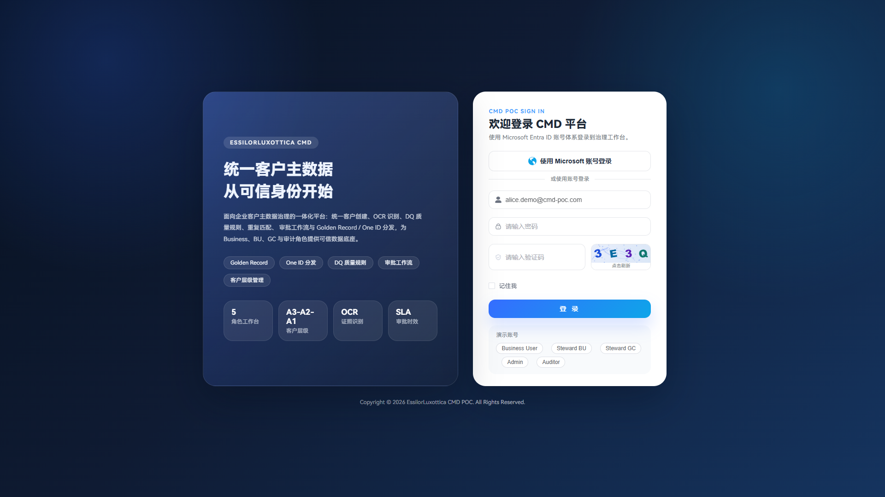
怎么点：
- 先点左侧的演示账号按钮，例如
Business User——点了以后用户名会自动填进输入框； - 再点蓝色的 「使用 Microsoft 账号登录」按钮（这样就跳过了右边的验证码）。
登录成功后进入该角色的工作台：
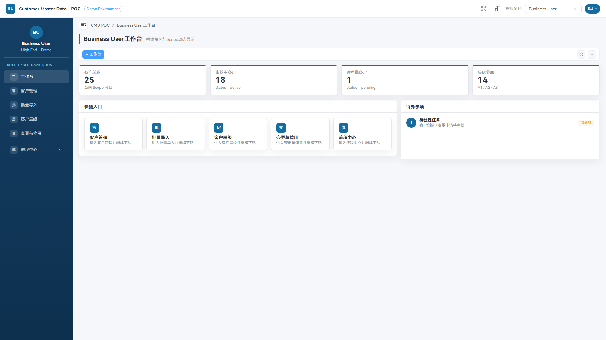
在左侧导航里点 「批量导入」（第 3 项，带角标 2）。
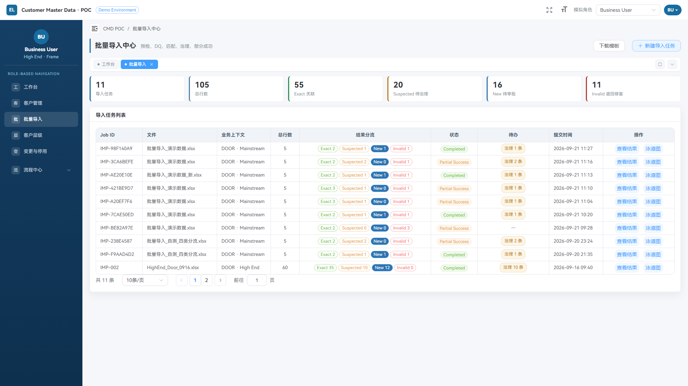
逐个区域说明：
① 顶部 6 个 KPI 卡片（一眼看全局）
| 卡片 | 看什么 |
|---|---|
| 导入任务 | 一共做过多少次导入 |
| 总行数 | 这些任务加起来一共多少行数据 |
| Exact 关联 | 有多少行被自动认成"已有客户" |
| Suspected 待治理 | 你最需要关注的一个数——还有多少行等人判断 |
| New 待审批 | 有多少新客户正等审批 |
| Invalid 退回修复 | 有多少行因为脏数据被退回，需要改 Excel |
② 右上角两个按钮
- 下载模板——拿到标准格式的空 Excel（后一步讲）；
- + 新建导入任务——这是整条流程的起点，点它开始导入。
③ 导入任务列表的每一列
| 列名 | 含义 |
|---|---|
| Job ID | 任务编号，形如 IMP-XXXXXXXX，后续查问题、追审批都用它 |
| 文件 | 你上传的 Excel 文件名 |
| 业务上下文 | 业务场景 · BU，例如 DOOR · Mainstream |
| 总行数 | 这个文件里有多少行数据 |
| 结果分流 | 四个彩色标签：Exact Suspected New Invalid，各多少条 |
| 状态 | 见下表；鼠标悬停能看到详细备注（原因） |
| 待办 | 新增列：直接告诉你这条任务还欠什么动作——治理 N 条（还有疑似行等人判断）· 审批 N 条（还有新客户等审批）；没有待办显示 — |
| 提交时间 | 什么时候提交的 |
| 操作 | 查看结果（打开分流结果弹窗）· 泳道图（看这条流程长什么样） |
任务状态有 5 种
| 状态 | 含义 | 颜色 |
|---|---|---|
| Waiting for Review | 已导入，有疑似/新行等待复核 | 橙色 |
| In Progress | 正在处理中 | 蓝色 |
| Partial Success | 部分成功：大部分行了，但有若干行（Invalid）需要退回修 | 橙色 |
| Completed | 全部处理完成（含审批通过） | 绿色 |
| Failed | 失败 | 红色 |
点右上角 「下载模板」，弹出模板清单：
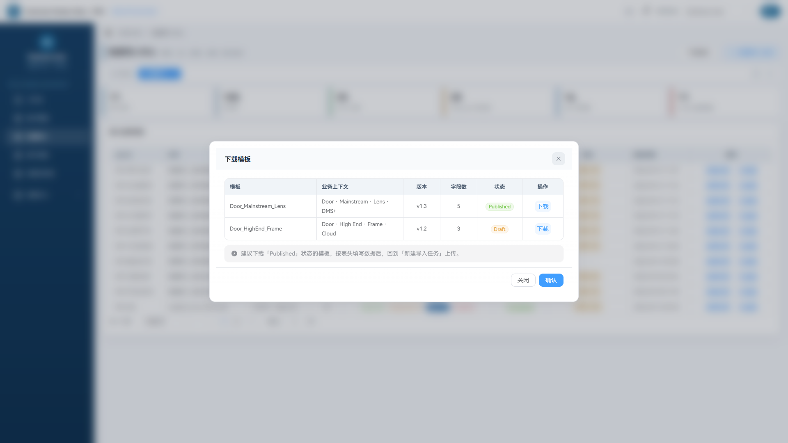
Draft 是草稿、还没生效；② 字段数告诉你这个模板有几列，和你手上的数据对得上再下。（模板与字段映射规则由 Platform Admin 在「平台管理 → Workflow/模板配置」里维护，属于设计中的配置旁路，业务用户不需要关心，所以这里只提供列表与下载。）
本演示使用的模板 TPL_DOOR_MAINSTREAM 需要这 5 列（加粗为必填）：
| 列序号 | Excel 列名 | 字段 | 是否必填 |
|---|---|---|---|
| 1 | CustomerName | 客户法定名称 | 是 |
| 2 | CreditCode | 统一社会信用代码（18 位大写字母或数字） | 是 |
| 3 | Address | 地址 | 是 |
| 4 | City | 城市 | 否 |
| 5 | ContactPhone | 联系电话 | 否 |
看完点弹窗右下角的 「关闭」。
点右上角 「+ 新建导入任务」，弹出新建任务窗口——这是整条流程真正的起点：
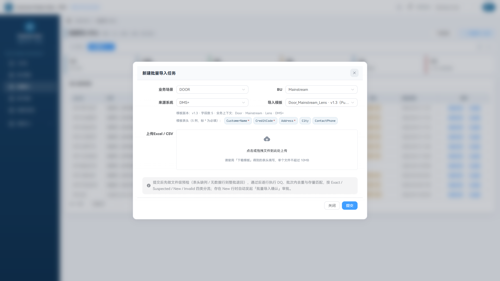
字段逐个解释
| 字段 | 说明 | 可选值 | 本演示选 |
|---|---|---|---|
| 业务场景 | 这批客户属于哪类业务入口 | DOOR / LEGAL / GROUP | DOOR |
| BU | 归哪个业务单元管 | High End / Mainstream | Mainstream |
| 来源系统 | 这批数据原本从哪来，用于追溯 | DMS+ / Cloud / SAP / EXCEL / Manual | DMS+ |
| 导入模板 | 用哪个模板解析这个文件。选好模板后，业务上下文会自动按模板定义回填，并显示表头要求 | 已发布的模板 | Door_Mainstream_Lens · v1.3 |
| 上传 Excel / CSV | 选择要导入的文件（后一步详述） | .xlsx / .xls / .csv | 批量导入_演示数据.xlsx |
CustomerName* CreditCode* Address* City ContactPhone。
上传前对照自己的 Excel 表头看一眼，就能避免"表头缺列导致整批退回"。（错误处理与重复识别按系统既定规则执行：错误行按
Reject Row 判为 Invalid 退回；疑似重复按"Exact 自动关联、Suspect 进入治理"处理。这两项不是每次导入都要填的选项，所以弹窗里不再让你重复选择。）
模板版本: v1.3 字段数: 5 业务上下文: Door · Mainstream Lens · DMS+。上传前扫一眼，能避免"用错模板"。
在 「上传 Excel / CSV」 区域，把 Excel 拖进去，或者点一下区域选文件。选好后会显示文件名与大小：
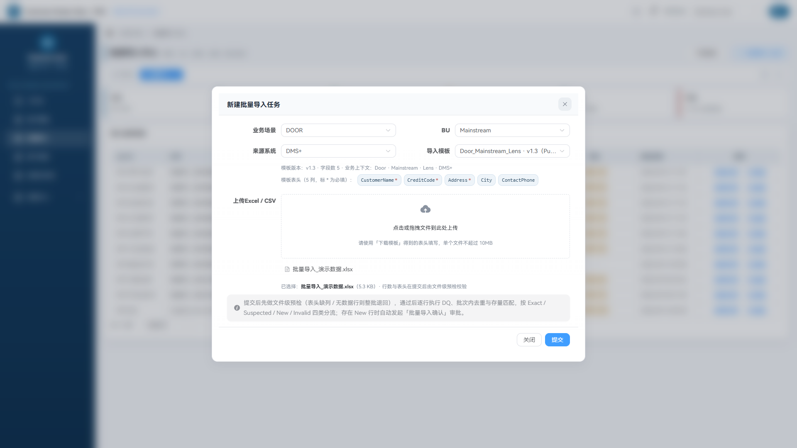
批量导入_演示数据.xlsx，下方灰字给出文件详情：已选择：批量导入_演示数据.xlsx（5.1 KB）· 行数与表头在提交后由文件级预检校验。此时可以点右下角「提交」了。.xlsx / .xls / .csv。表头行必须是第 1 行，数据从第 2 行开始。
点右下角蓝色 「提交」。系统在后台一次性跑完前 4 个阶段，几秒后弹窗自动关闭、列表刷新，最上方出现刚创建的任务：
IMP-777450DB 出现在第一行：文件 批量导入_演示数据.xlsx、业务上下文 DOOR · Mainstream、总行数 5、结果分流 Exact 1 Suspected 2 New 1 Invalid 1、状态 Partial Success、待办列提示「治理 2 条 · 审批 1 条」。顶部 KPI 卡同步更新。如果表头不对会怎样？
整批退回，连任务都不会创建，页面弹出红色提示：
文件预检未通过：表头缺少列 Address，已整批退回（请使用最新模板填写）
遇到这种提示，回到步骤 3 重新下载模板，把数据填进正确的列再上传。
在任务列表那一行，点操作列的 「查看结果」：
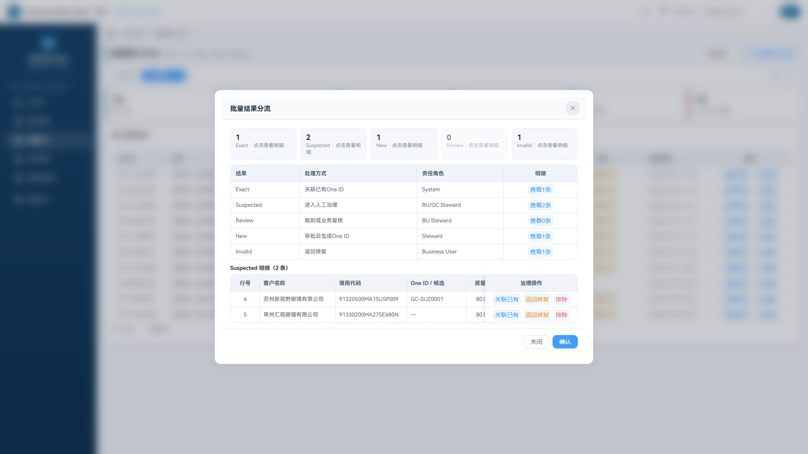
弹窗有三层信息，从上到下读：
- KPI 卡片：1 Exact 2 Suspected 1 New 1 Invalid（另有 Review 用于规则/业务复核）。每张卡片都能点，点了下方明细就切换到这一类。
- 处理方式路由表：一眼看清"谁负责哪一类"——Exact 由系统自动关联、Suspected 由 BU/GC Steward 人工治理、New 由 Steward 审批后生成 One ID、Invalid 由 Business User 退回修复。
- 明细区：显示当前选中分流的每一行，含行号、客户名称、信用代码、One ID / 候选、质量分、问题说明；如果是 Suspected，还有一列 治理操作。
点任意一个 KPI 卡片，下方明细就换成那一类。四个都点一遍，就能看懂这批数据的全貌。
① 点 Exact —— 看清楚"哪几行已经认到老客户了"
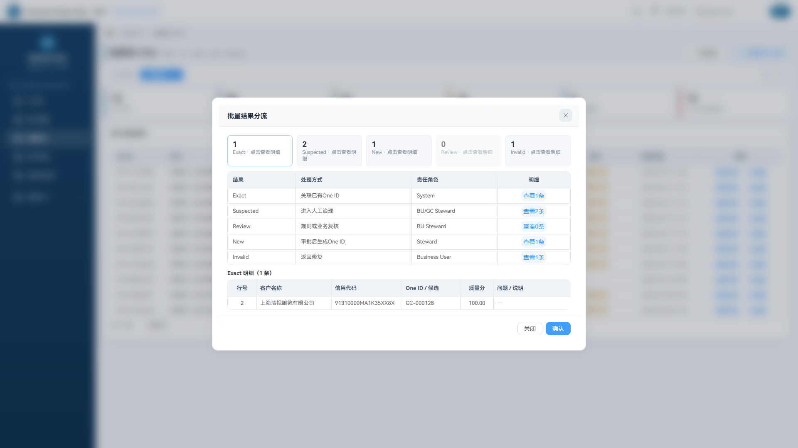
GC-000128），不需要你做任何事。② 点 Suspected —— 这是你要干活的地方
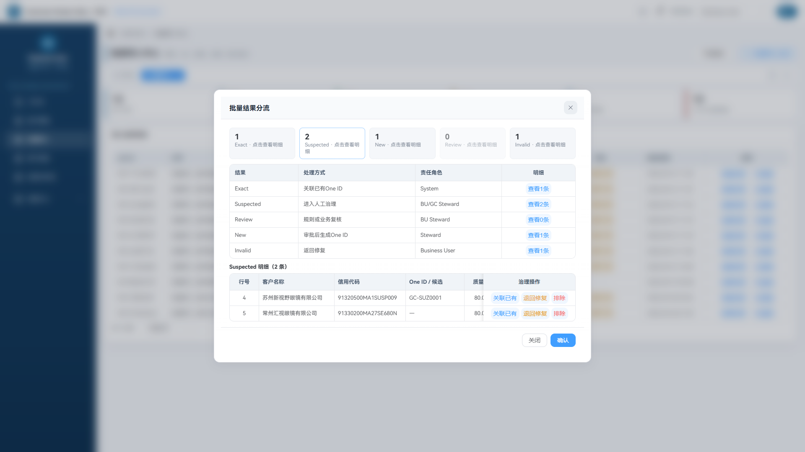
③ 点 New —— 将来会变成新客户的行
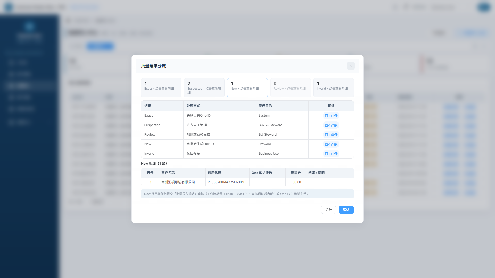
④ 点 Invalid —— 需要改 Excel 的行
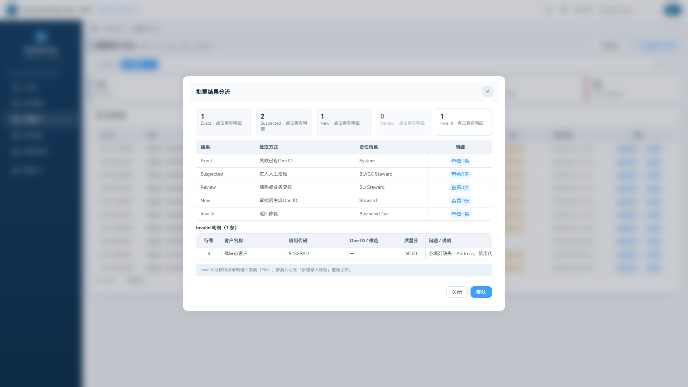
回到 Suspected 明细，对每一行做一个判断。三个按钮的含义：
| 按钮 | 你什么时候点它 | 系统做了什么 | 结果 |
|---|---|---|---|
| 关联已有 | 确认这行和主档里某家公司就是同一家，把它挂过去 | 弹窗让你输入 / 修改 One ID，确认后把该行改成 Exact | Suspected → Exact |
| 退回修复 | 线下核实后发现数据有问题，需要填表人改 | 把该行标为退回，注明"需线下核实后再导入" | → Invalid（Fix） |
| 排除 | 这行不该进主档（例如测试数据、已停业客户） | 把该行标为排除，注明"不纳入主档" | → Invalid（Ignored） |
操作 9-1：关联已有
点 「关联已有」，弹出输入框，候选 One ID 已经预填好（就是系统匹配到的那个）：
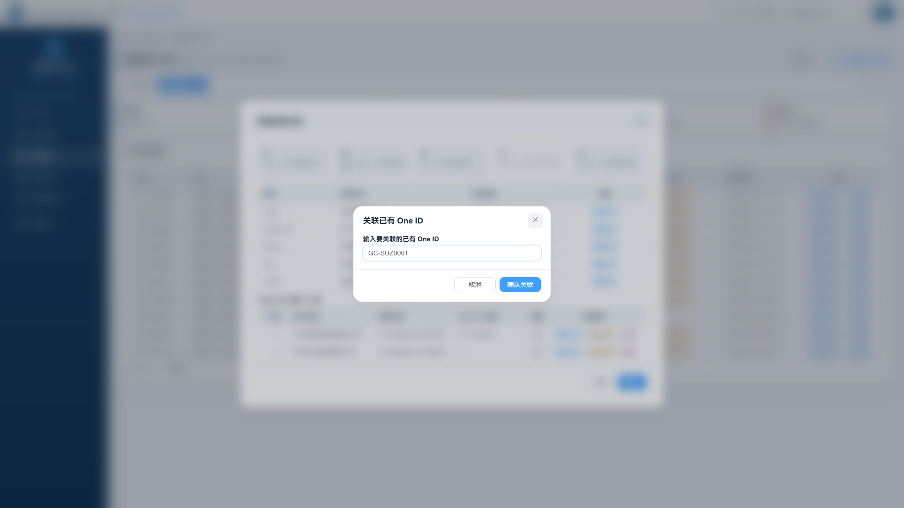
GC-SUZ0001。确认无误点 「确认关联」；不对就改成正确的 One ID 再确认，或点「取消」。确认后统计立刻重算——注意看 KPI 的变化：
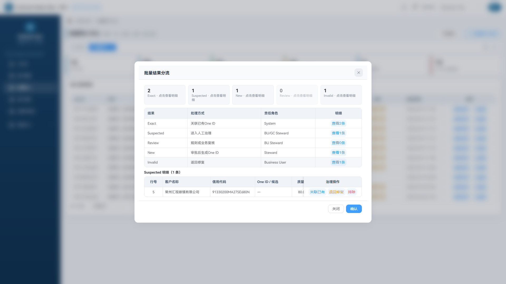
操作 9-2：退回修复
点 「退回修复」，先弹确认框（防误操作）：
操作 9-3：排除
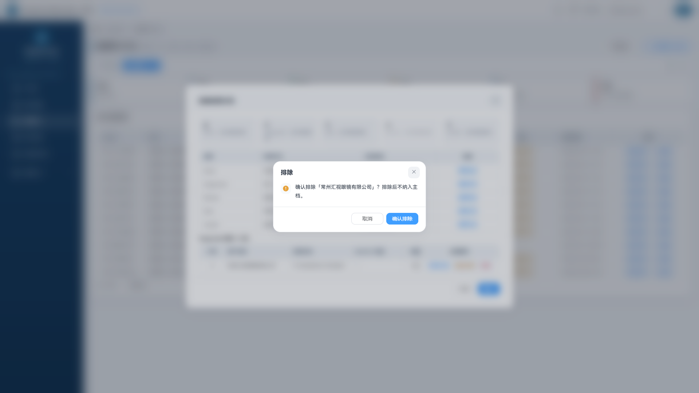
治理做完，关掉结果弹窗回到列表：
点该行的 「泳道图」（或任意行的 One ID 列文字），可以看到这条流程长什么样：
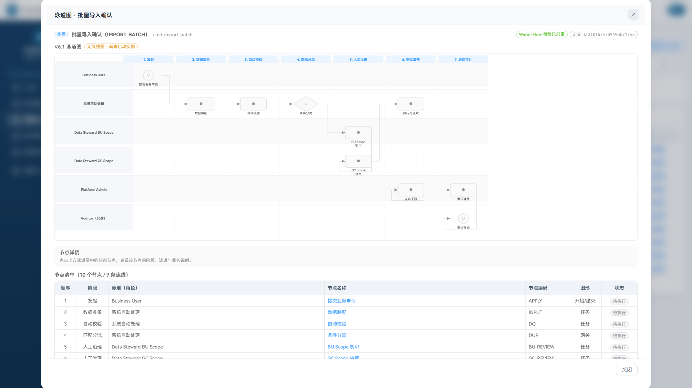
Business User 的工作到这里基本结束。接下来换成数据管家处理审批。退出登录，用 Steward BU 账号重新登录：
先点登录页的 「Steward BU」 按钮 → 再点 「使用 Microsoft 账号登录」，进入 BU 管家工作台：
点左侧 「治理与审批」：
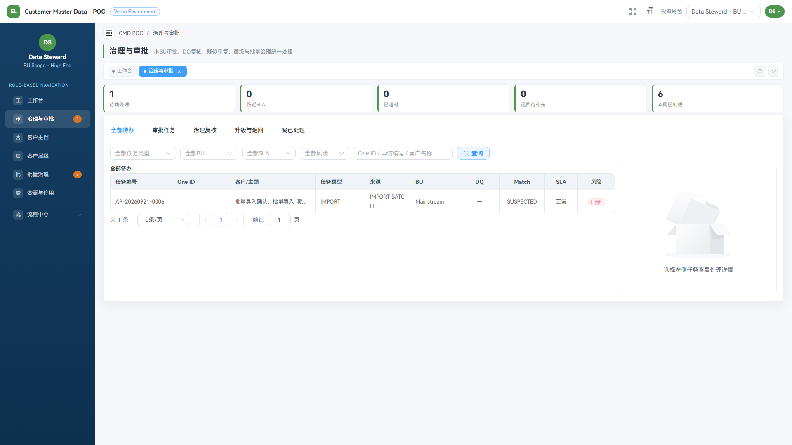
在左侧列表里点中那条 「批量导入确认：批量导入_演示数据.xlsx」，右侧会显示完整判断依据：
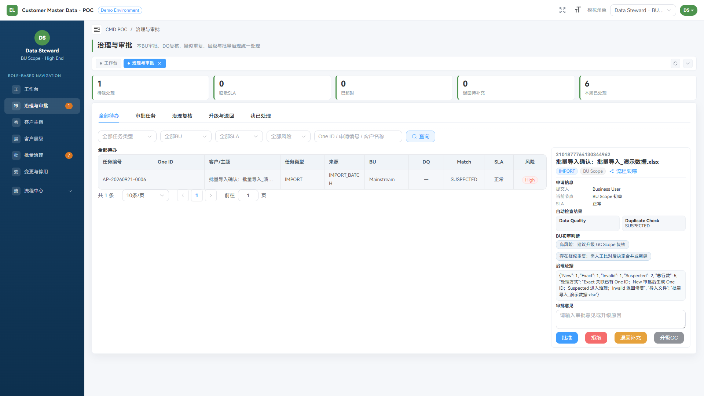
什么时候该点「升级GC」？
当 BU 管家发现这批客户涉及跨 BU、自己权限内判断不了时，点「升级GC」把决策权交给全局数据管家。这是设计里第 5 阶段的 GC Scope 决策泳道。
看「流程跟踪」——这一次执行的完整链路
点详情右上角的 「流程跟踪」：
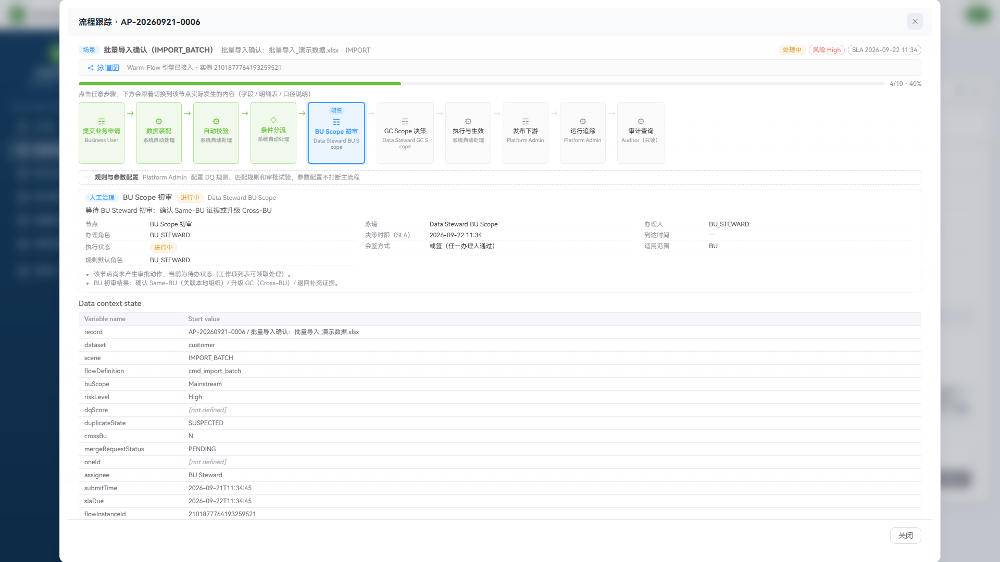
在「审批意见」框里填一句说明，然后点 「批准」：
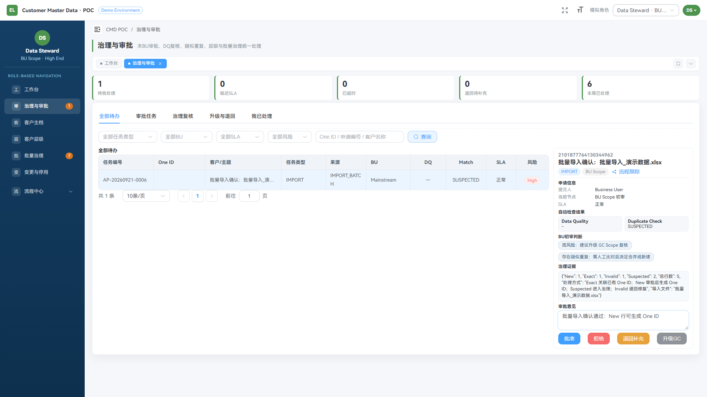
批准后系统立刻执行发布动作，待办数量随之变化：
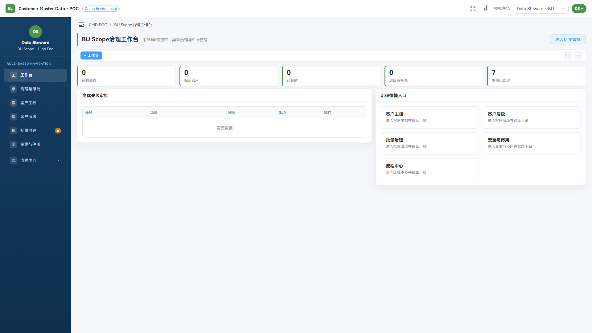
- 为所有 New 行生成客户主档，分配 One ID，状态设为
active，来源系统标为IMPORT（可追溯回这次导入）； - 把导入任务状态改成 Completed，并在备注里写上"审批通过：N 条 New 行已生成 One ID（审批人：xxx）"；
- 把审批意见、操作人、时间写入审批轨迹与审计日志。
用 Admin 账号登录，点左侧 「平台管理」：
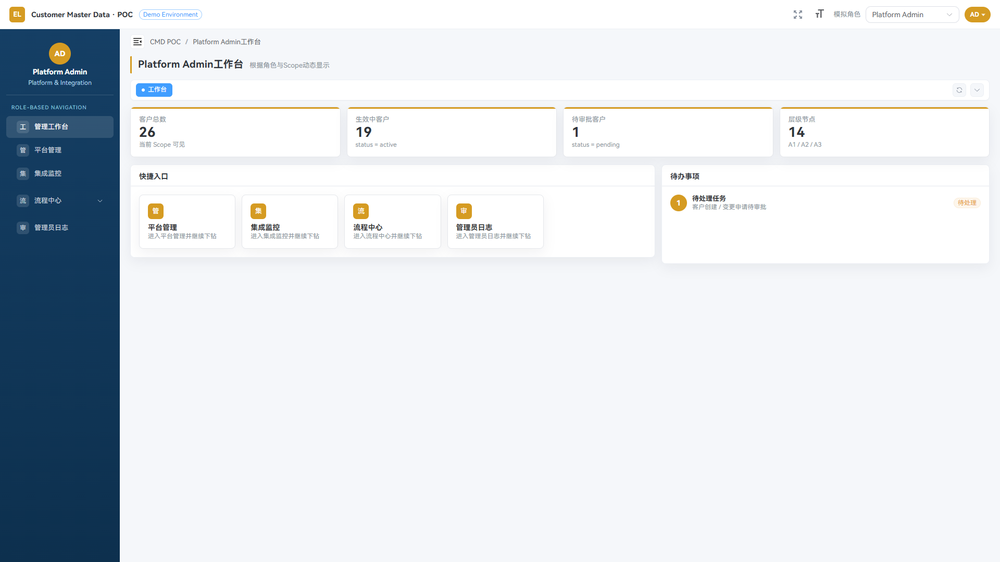
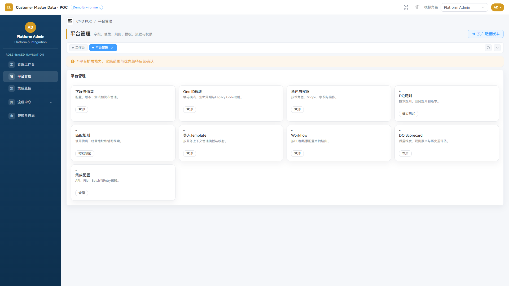
| 卡片 | 作用 |
|---|---|
| 导入 Template | 新增/停用导入模板，维护"Excel 列名 ↔ 系统字段"的映射关系（决定了表头预检的依据） |
| Workflow | 配置各业务场景的审批路由、条件与 SLA（本演示的 IMPORT_BATCH 场景就在这里） |
| One ID 规则 | One ID 的命名规则与生成策略 |
| 匹配规则 | 姓名/地址/信用代码等匹配阈值，直接影响 Exact 与 Suspected 的判定 |
| DQ 规则 / DQ Scorecard | 数据质量规则与评分卡 |
五四类分流判定规则（系统怎么想的）
很多人会问"为什么这行被判成 Suspected 而不是 New"。系统的判定是有严格顺序的，从上往下第一个命中的就是结论：
| 顺序 | 判断条件 | 结论 |
|---|---|---|
| 1 | 必填列有缺失，或信用代码不是 18 位大写字母数字 | Invalid |
| 2 | 与本批前面某行的信用代码重复 | Suspected |
| 3 | 与本批前面某行的客户名称重复 | Suspected |
| 4 | 信用代码在现有 active 主档里命中 | Exact（带出已有 One ID） |
| 5 | 客户名称与现有主档相同（但信用代码不同） | Suspected（带出候选 One ID） |
| 6 | 以上都没命中 | New |
任务状态是怎么推出来的
| 条件 | 任务状态 |
|---|---|
| 全部行都是 Invalid | Failed（失败） |
| 有 Invalid，也有其他 | Partial Success（部分成功） |
| 没有 Invalid，但有 Suspected / New | Waiting for Review（待复核） |
| 全部是 Exact | Completed（完成） |
行级质量分（DQ Score）
每行从 100 分起算，每发现一个问题扣 20 分；被判为 Invalid 的行保底 40 分。所以「质量分」列可以直接当"这行有多干净"的指标看。
七常见问题
Q1. 提交后什么都没发生，或者列表里还是空的？
依次检查：① 是不是在批量导入菜单下（不是工作台）；② 页面右上角有没有红色报错提示；③ 后端服务是否在运行（浏览器控制台若出现 502，说明后端没起来）。
Q2. 提示「文件预检未通过：表头缺少列 XXX」怎么办？
你上传的 Excel 表头与模板不一致。回到「下载模板」，用新下载的模板重新粘贴数据，确保表头是 CustomerName / CreditCode / Address / City / ContactPhone（注意大小写和不要有空格）。
Q3. 明明是新客户，为什么被判成 Suspected？
最常见的原因是名称与存量客户完全一样。系统的逻辑是：名称一样但信用代码不同 → 不敢认定是新客户，先让人确认。这正是为了避免重复建主档。如果确认确实不是同一家（例如同名不同地区），在治理里点「排除」或「退回修复」并注明原因即可。
Q4. New 行什么时候才会真的变成客户？
必须等 Data Steward 在「治理与审批」里点「批准」。批准前它只是"待生成"，主档里查不到。批准后系统会分配 One ID，状态为 active，来源系统记为 IMPORT，并可通过任务的 Job ID 追溯。
Q5. Invalid 的行怎么处理？
这行不会进主档。你需要打开原始 Excel 修改对应行（补齐必填项、修正信用代码），然后把修好的行放在一个新文件里重新提交一次导入。原任务保留为历史记录。
Q6. 怎么知道谁在什么时候改了什么？
每个动作都会留痕：行治理动作写审计事件（事件类型 IMPORT），审批动作写审批轨迹，流程节点写工作流步骤日志。用 Auditor 账号进入 审计中心 / 治理审计 可以查询，或在「流程跟踪」弹窗中查看该次执行的上下文与节点明细。
Q7. 「Suspected」和「Review」有什么区别？
Suspected 是"疑似重复"，由匹配规则自动得出，交给 BU/GC Steward 治理；Review 是"规则或业务复核"，用于需要人工按规则确认的场景。本次演示数据没有产生 Review 行，所以卡片显示为 0。
附一页纸总结
需要人动手的只有两处：①把 Suspected 清空、②让 New 走完审批。其余全部由系统自动完成。